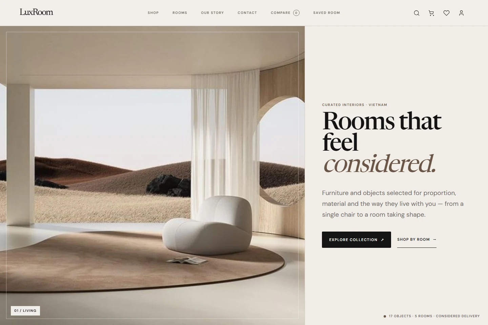
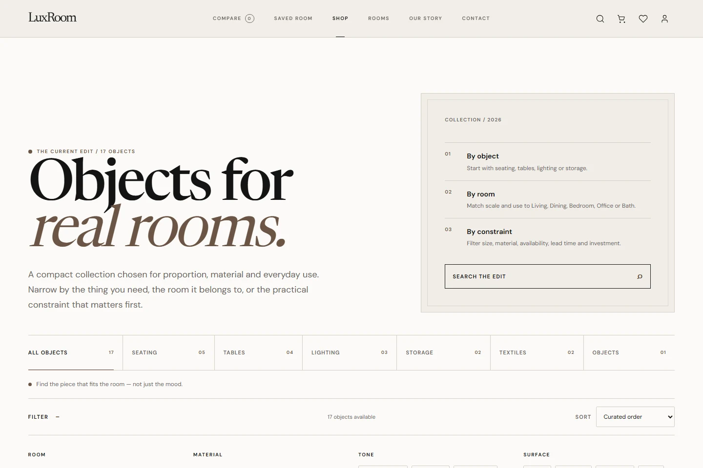
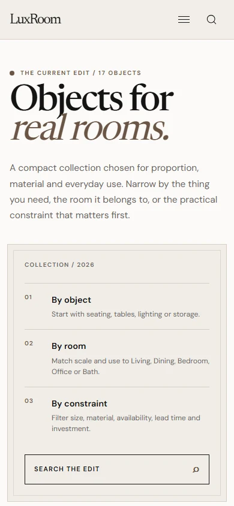

FURNITURE / PRODUCT DECISION UX
LuxRoom
A furniture shopping journey that connects room context, product confidence and a recoverable path to purchase.

Help shoppers judge fit before committing.
Furniture decisions need more than an attractive image. Dimensions, material, availability and delivery all matter, but exposing everything at once can overwhelm discovery.
I owned UI/UX direction, content hierarchy, responsive design and the front-end prototype, balancing a calm visual experience with practical purchase information.
Move from inspiration to a clear choice.
-
Start with the room
Use a familiar space as the entry point, then connect that context to relevant products.
-
Reveal detail with intent
Introduce material and visual cues early; make dimensions, finish, stock and delivery prominent during evaluation.
-
Keep the choice recoverable
Carry product configuration into cart and checkout, with a way to revisit choices instead of restarting.
Premium is carried by hierarchy, not by hiding information
Room-oriented discovery
Space context gives users a concrete way to enter the catalog without losing the visual story.
Progressive information density
Material and visual cues appear early; dimensions, finish, stock and delivery become prominent closer to purchase.
Commerce continuity
Variant, delivery and location context are carried into cart and checkout instead of becoming detached metadata.
A clear route into the collection.
Product discovery is presented at desktop and mobile widths. Open either capture to inspect the information hierarchy at full size.


What this work demonstrates.
The implemented prototype demonstrates responsive hierarchy and continuity from discovery to configuration and checkout. It shows my design and implementation work, not measured commercial performance.
Independent concept. No observed commerce testing, purchase analytics or conversion impact is available. The next validation should test product fit, configuration confidence and checkout recovery.
The design lesson: a premium interface can stay calm while making practical decisions explicit.
Evidence details and validation plan
Supporting source audit and planned validation. The audit records an earlier source review; this narrative edit adds no user research, measured outcomes or team claims.
What I owned, chose, traded off — and what is still unknown
Detailed project context, decisions and evidence limits.
UI/UX Designer
Independent project; no separate PM, engineering or stakeholder team is documented in this public case.
NOT EXPLICIT — the case describes the solution, but the governing product or technical constraint is not isolated as a decision input.
NOT DOCUMENTED — the selected direction is visible, but a verified alternative set is not recorded.
NOT EXPLICIT — implemented direction exists, but the case does not yet isolate one decision and its rationale.
NOT DOCUMENTED — no verified downside or cost of the selected direction is stated explicitly.
Implementation reality: Implemented prototype. No verified engineering-collaboration record is present in this public case.
Local component, state or system implications are documented in the case; downstream production impact is not measured.
NOT AVAILABLE — no verified failure, rejected release or project pivot is documented in this public case.
PLANNED / NOT MEASURED. Baseline: Needs first usability benchmark.
Run the first benchmark against the predefined A26 target; if the threshold is missed, revise the selected model before adding more polish or scope.
Three things a reviewer should not have to infer
Success criteria before success claims
≥ 4/5 participants select a product configuration and reach cart without variant-selection error. This is a decision threshold for future validation, not a measured outcome.